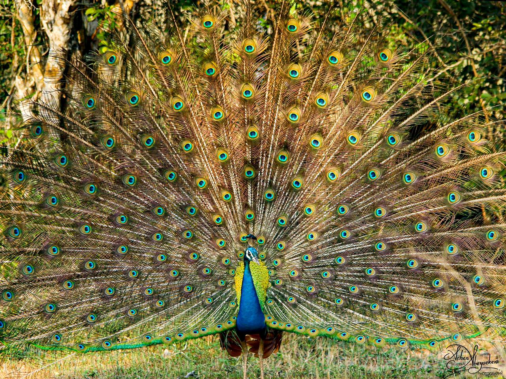
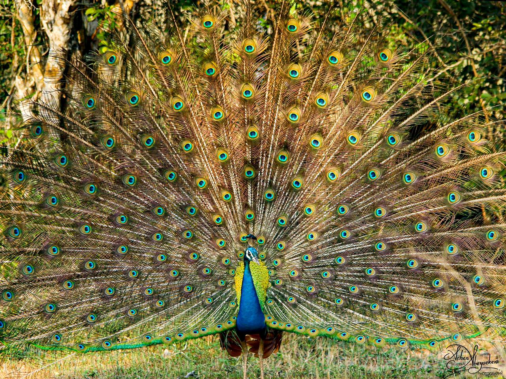

Sri Lanka's Wildlife Locations
A paradise for wildlife enthusiasts. This tropical island is home to some of the finest National Parks in South Asia. Below are some best places to see diverse and exciting wildlife on a tailor made holiday to Sri Lanka.
Yala National Park
 


Yala which is the oldest National park in Sri Lanka, is extended over Uva and Southern provinces. Yala is nearly 130,000 hectares of land consisting of light forests, scrubs, grasslands and lagoons. Among the 44 varieties of mammals and 215 bird species, its more famous residents are the world's biggest concentration of leopards, elephants, spotted dear, peacocks, crocodiles and many more. The water levels of the park are low between February and July which bring animals into the open. Therefore it is the best time to visit Yala.
Wilpattu National Park


Entirely within Nothern Province. Contains 31 varieties of mammals such as leopards, sloth bears, spotted deer, water buffalo.....Also many species of birds and butterflies can be found. During the months of February and October are the best time to visit Wilpattu.
Udawalawa National Park


Udawalawa National Park contains a land of 30,821 hectares. This is situated in Ratnapura district in Sabaragamuwa Province Monaragala district in Uva Province. Main attractions to the park are water buffalo wildboar, foxes and more. The west of the park, Kalthote escarpment and spectacular Diyawinne fall to the North Ulagala are the most prominent features.
| Sanctuary | Significant Plant Species | Significant Animal Species |
| Yala National Park |
|
|
| Wilpattu National Park |
|
|
| Udawalawa National Park |
|
|
| © Serendib |